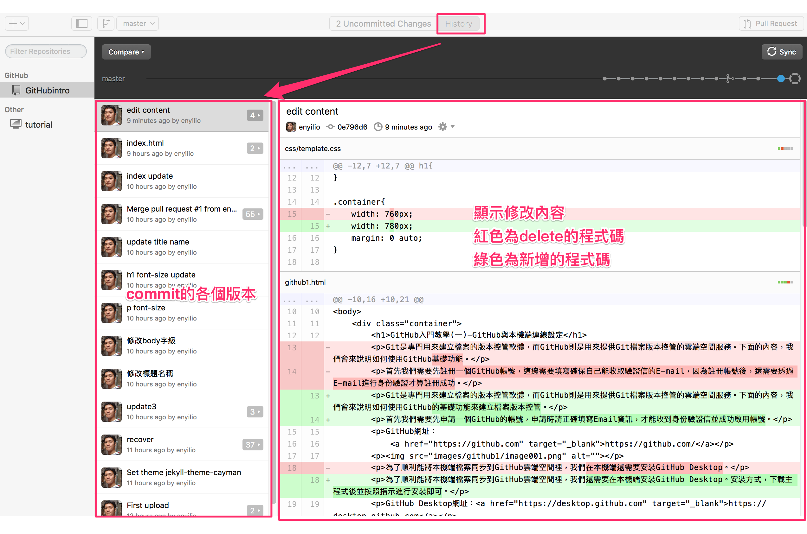
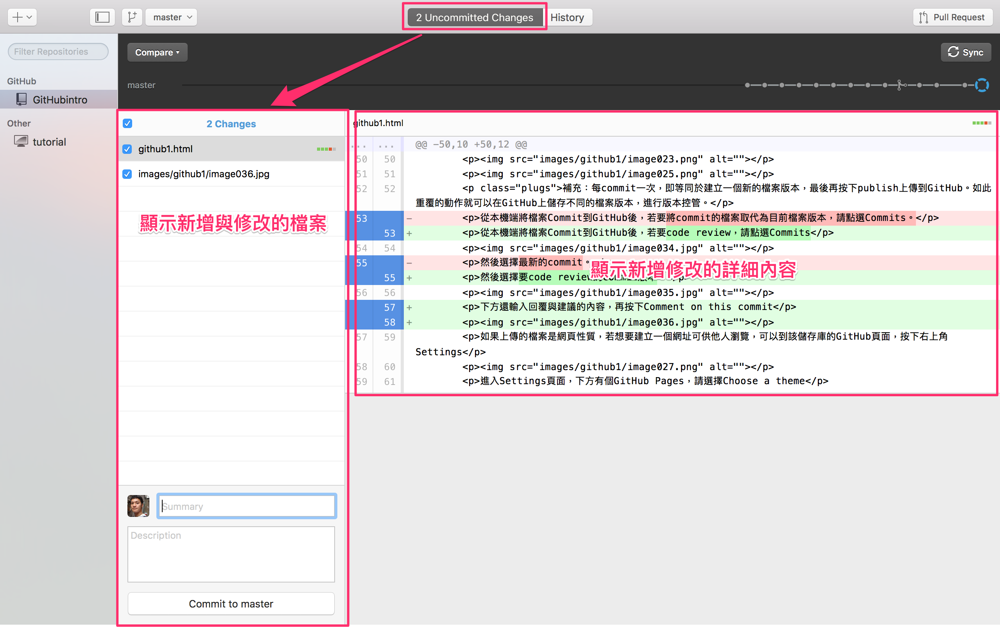
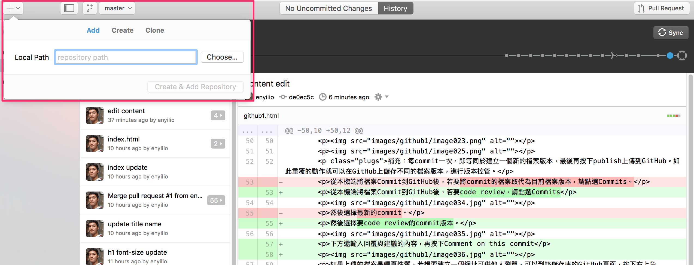
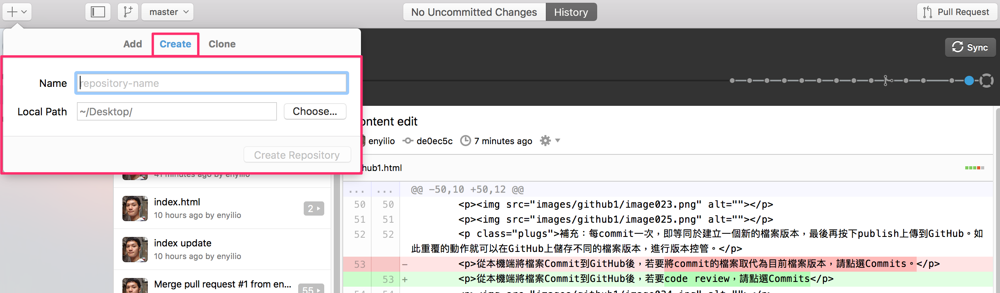
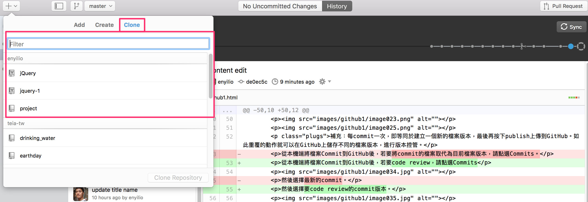
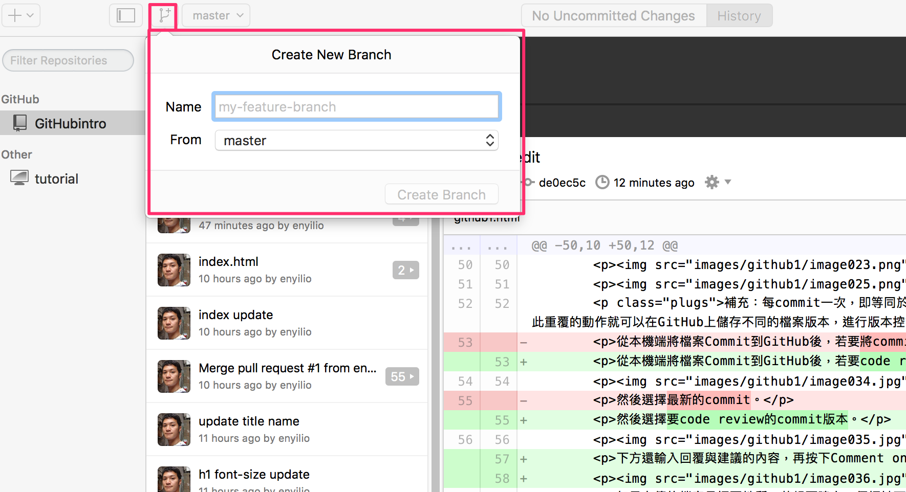

GitHub Desktop是GitHub推出的本機端與GitHub雲端空間檔案同步軟體。優點在於具有美觀的瀏覽介面與簡潔的功能操作。接下來這篇主要就是介紹，如何使用GitHub Desktop上的一些基本功能。
History會顯示該專案過去到現在commit的各個檔案版本，只要點選commit的名稱即可瀏覽增減的詳細內容。

如下圖顯示:2 Uncommited Changes表示有兩筆資料已編輯過，但尚未commit建立版本。這時若要commit新的檔案版本，只要在summary及description輸入適當的內容，再按commit to master即可建議新的檔案版本。

Add 將本機端的專案上傳到GitHub，同時建立一個新的儲存庫（Repository）。（所有檔案上傳）

Create 在本機端及GitHub同時建立一個全新空的專案資料夾及儲存庫（Repository）。（建立新的專案目錄）

Clone 將GitHub上的專案複製到本機端

常使用在開發新的功能時，尚屬於Beta階段，通常會建立一個分支版本來進行控管。
